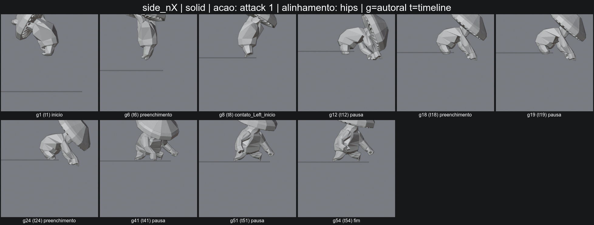
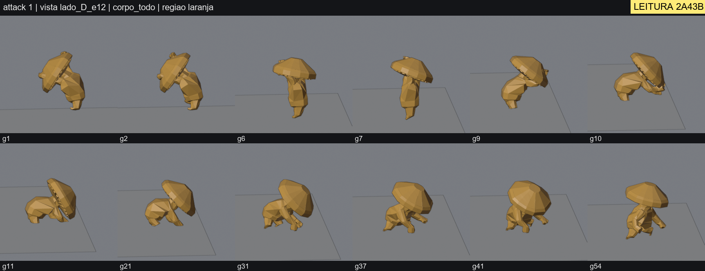
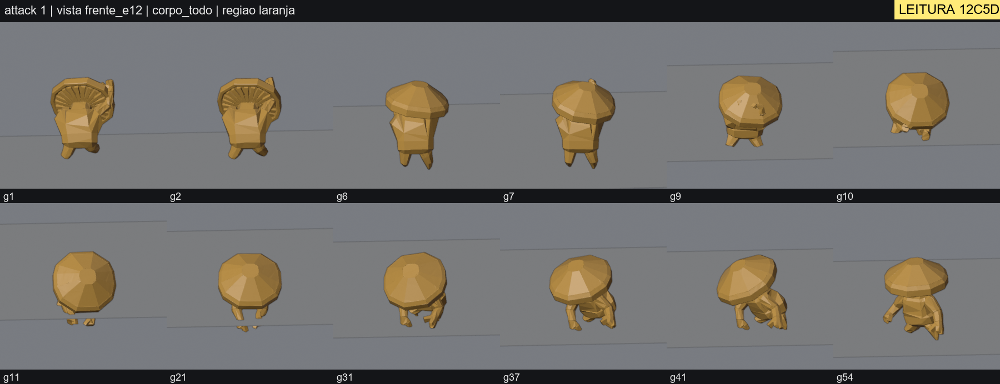
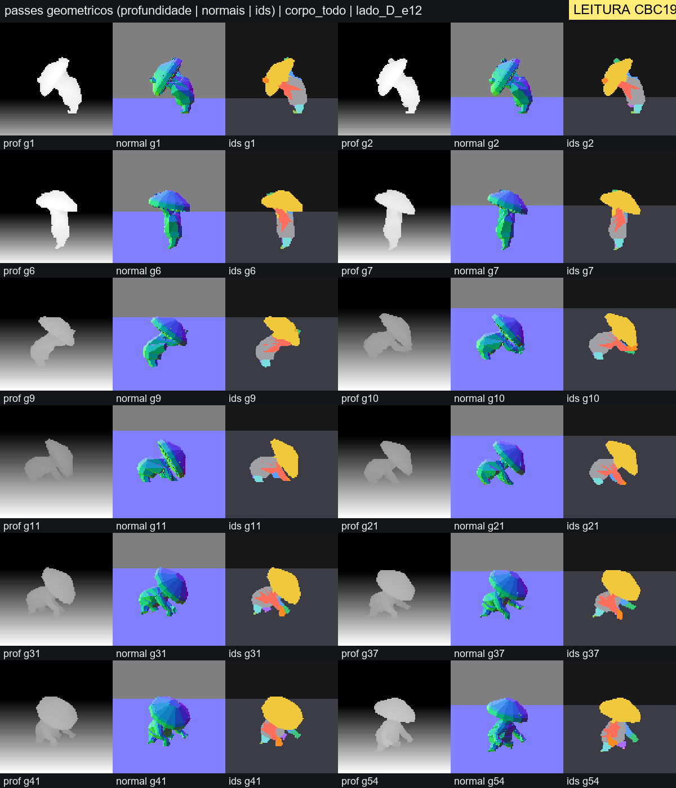
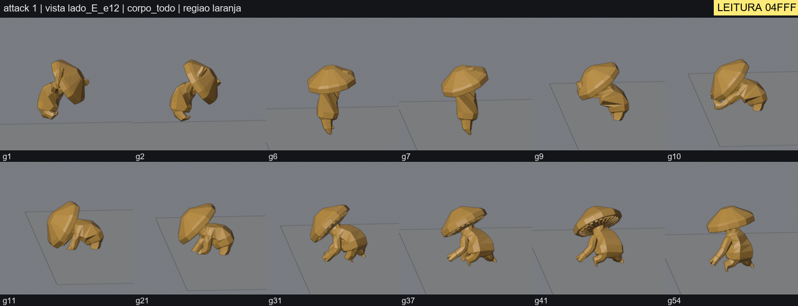
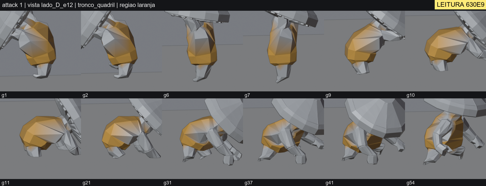
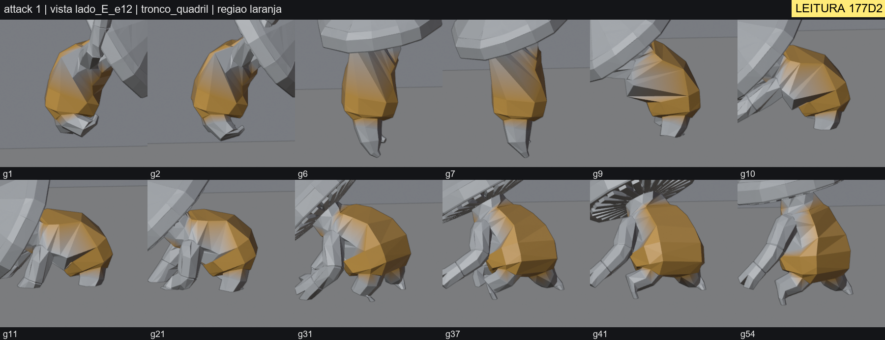
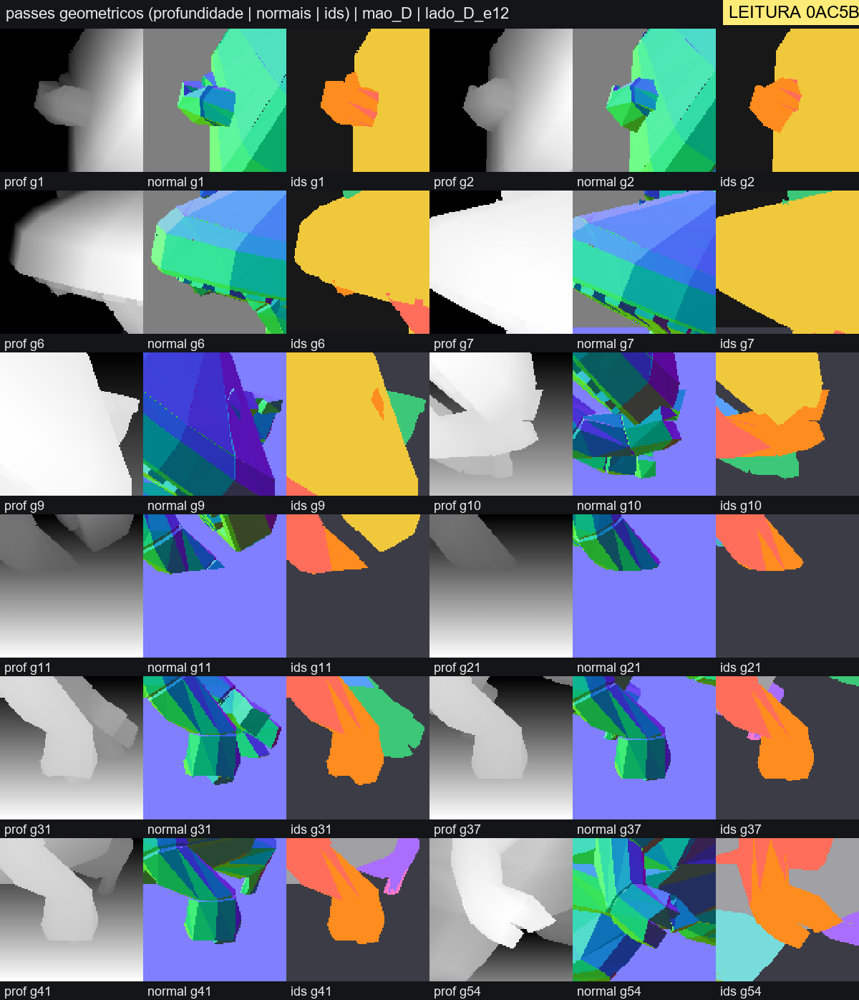
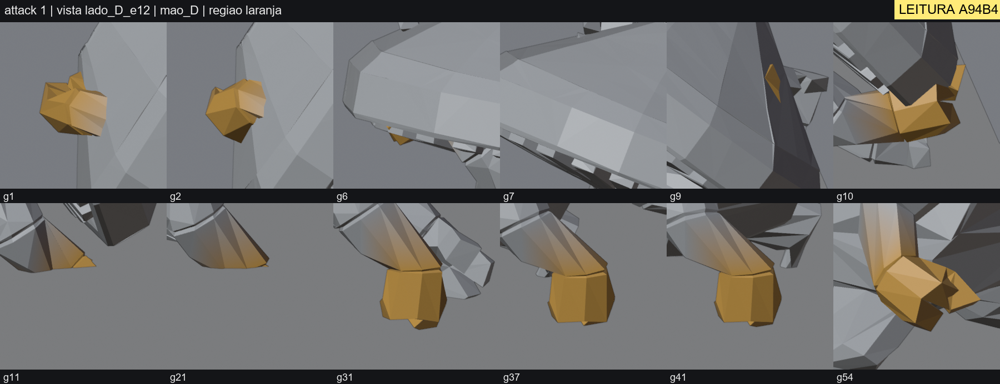
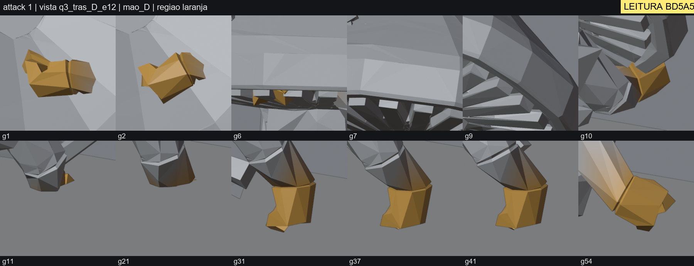

Percepção ativa no Mushroom (Mosh) — clipe attack 1
Blender Vision: a IA passa a saber o que viu e o que não viu. Caso de validação no lugar do Tackle do Vigoroth. Fonte somente leitura: chars/mosh/Cogumelo.glb (54 frames a 30 fps).
Resumo
- O Mushroom não tem Tackle nem .blend; o caso foi o clipe attack 1 do Cogumelo.glb (malha + esqueleto Mixamo + clipes). Não há briefing nem referência aprovados para ele: nenhuma conclusão artística é certificada.
- O que o clipe mostra em 3–4 vistas independentes: começa já no ar e inclinado (g1–g2), cai na vertical (g6–g7), pousa dobrando o corpo todo e girando o chapéu para cima/trás (g9–g11) e fica agachado apoiado nas mãos (g21–g41), levantando um pouco em g54. Lê como queda e amortecimento de pouso, não como golpe dirigido a um alvo (hipótese, sem briefing).
- Não há antecipação dentro do clipe (ele começa no ar): fato medido (razão de recuo 0,0) e visto nas três vistas; a preparação teria de vir de outro clipe.
- Achado geométrico: as malhas das mãos descem até 0,21 m (D) e 0,26 m (E) abaixo do plano do chão de g11 a g22, e coxas/canelas 8–10 cm; por isso a mão some nas imagens de g11 e g21. O plano é o dos pés da idle (z=0,0087) e pode diferir do chão do jogo.
- Hipótese de contato: o teste classifica braços e mãos × chapéu como ATRAVESSAMENTO_PROVAVEL entre g1 e g10, mas a mão D não foi observada em g6, g7, g9, g11 e g21 em nenhuma vista; a interseção real continua não confirmada.
- A mão é um bloco sem dedos (297 vértices): abrir/fechar garra não é legível nesta malha (limite da topologia).
- Antes × depois: o enquadramento padrão da ferramenta anterior cortava o personagem em 34 de 36 vistas; a câmera ajustada ao corpo, 0 de 48. O Witness anterior só dizia duração, inventário e deslocamento; agora há o que está visível por região e por frame, vistas pedidas automaticamente e o que ficou sem vista (mãos e pé D: PARCIAL).
- Um diagnóstico A–G com 9 entradas foi aceito pelo validador; 9 variações adversárias do mesmo pacote foram recusadas (código de leitura errado, uma só vista, região não observada, aprovação sem referência, texto genérico, medição inexistente, correção aplicada, folhas de outra região, frame com visibilidade 0,59).
Antes × depois
Ferramenta anterior neste clipe
- Enquadramento padrão: personagem cortado pela borda em 34 de 36 vistas (a ferramenta não verifica corte de quadro).
- Animation Witness: {"COMPROVADO": 2, "MEDIDO_SEM_CRITERIO": 1, "NAO_COMPROVAVEL": 1, "REFUTADO": 0}. Não diz onde está a mão, se o chapéu cobre o corpo, nem se algo afunda no chão.


Vista lateral padrão da ferramenta anterior (personagem cortado em g1, g6, g8).
Percepção ativa
- Câmera ajustada ao corpo, escala única: 0 de 48 vistas cortadas.
- Cada região recebe vistas até haver 2 independentes por frame, ou o motivo de não haver.
- Passes reais de profundidade, normais e ids por pixel.


Corpo todo, lado D, 12 frames, mesma escala.
Observação por região (quem foi realmente visto)
| Região | Status | Frames com 2+ vistas | Só 1 vista | Sem vista | Vistas pedidas (por rodada) | Parou porque |
|---|---|---|---|---|---|---|
| corpo_todo | OBSERVADO_SUFICIENTE | [1, 2, 6, 7, 9, 10, 11, 21, 31, 37, 41, 54] | [] | [] | frente_e12, lado_D_e12 | q3_tras_E_e12, lado_E_e12 | evidencia suficiente em todos os frames |
| tronco_quadril | OBSERVADO_SUFICIENTE | [1, 2, 6, 7, 9, 10, 11, 21, 31, 37, 41, 54] | [] | [] | frente_e12, lado_D_e12 | lado_E_e12, q3_tras_D_e12 | evidencia suficiente em todos os frames |
| cabeca | OBSERVADO_SUFICIENTE | [1, 2, 6, 7, 9, 10, 11, 21, 31, 37, 41, 54] | [] | [] | frente_e12, lado_D_e12 | topo, q3_frente_D_e35 | evidencia suficiente em todos os frames |
| mao_D | OBSERVADO_PARCIAL | [1, 10, 31, 37, 41, 54] | [2] | [6, 7, 9, 11, 21] | frente_e12, lado_D_e12 | tras_e12, q3_tras_D_e12 | q3_frente_D_e12 | nenhuma vista candidata acrescenta evidencia independente nos frames que faltam |
| mao_E | OBSERVADO_PARCIAL | [1, 2, 10, 31, 37, 41, 54] | [9] | [6, 7, 11, 21] | frente_e12, lado_D_e12 | q3_frente_E_e35, q3_frente_E_e12 | lado_E_e12, lado_E_e35 | nenhuma vista candidata acrescenta evidencia independente nos frames que faltam |
| pe_D | OBSERVADO_PARCIAL | [6, 37, 54] | [1, 2, 7, 9, 31, 41] | [10, 11, 21] | frente_e12, lado_D_e12 | q3_frente_D_e12, tras_e12 | q3_tras_E_e12 | nenhuma vista candidata acrescenta evidencia independente nos frames que faltam |
Frames sem vista não são “corretos”: são não observados. Ex.: a mão D em g6, g7, g9, g11 e g21 fica sob o chapéu ou abaixo do chão em todas as vistas.
Folhas lidas (com código de leitura)


folha_corpo_todo_frente_e12.png · código 12C5D · região corpo_todo


passes_corpo_todo_lado_D_e12.png · código CBC19 · região corpo_todo


folha_corpo_todo_lado_E_e12.png · código 04FFF · região corpo_todo


folha_tronco_quadril_lado_D_e12.png · código 630E9 · região tronco_quadril


folha_tronco_quadril_lado_E_e12.png · código 177D2 · região tronco_quadril


passes_mao_D_lado_D_e12.png · código 0AC5B · região mao_D


folha_mao_D_lado_D_e12.png · código A94B4 · região mao_D


folha_mao_D_q3_tras_D_e12.png · código BD5A5 · região mao_D
Movimento (medidas e hipóteses)
Efetuador: Hips (mundo). Frame de contato: None — sem alvo geometrico autorizado: o frame de contato nao e escolhido pelo pico de velocidade
| Fase candidata | Frames | Status | Base |
|---|---|---|---|
| repouso_inicial | g1–g1 | HIPOTESE | velocidade < 10% do pico |
| aceleracao_candidata | g2–g6 | HIPOTESE | sem recuo mensuravel; do inicio ao pico de velocidade |
| pico_de_movimento | g6–g8 | HIPOTESE | pico de velocidade do efetuador: NAO e frame de contato |
| desaceleracao_candidata | g9–g9 | HIPOTESE | queda ate < 50% do pico |
| recuperacao_candidata | g10–g36 | HIPOTESE | velocidade residual ate < 10% do pico |
| repouso_final | g37–g54 | HIPOTESE | velocidade < 10% do pico |
Antecedência
Presente: False · razão recuo/curso 0.0
medida geometrica no eixo do golpe; 'antecipacao legivel' ainda exige olhar a pose (silhueta, corpo todo)
Sequência do corpo
Ordem (alfa médio): quadril_deslocamento_m → braco_rot_rel_tronco_graus → antebraco_rot_rel_braco_graus → mao_pos_rel_quadril_m → quadril_rotacao_graus → tronco_rot_rel_quadril_graus
Mão × tronco: simultaneo · ordem robusta entre alfas: False
Geometria abaixo do chão (plano z=0.0087)
| Rótulo | Prof. máx. (m) | Frame | Frames |
|---|---|---|---|
| head | 0.0246 | g12 | [12] |
| arm_L | 0.0771 | g12 | [11, 12, 13] |
| hand_L | 0.2643 | g11 | [11, 12, 13, 14, 15, 16, 17, 18, 19, 20, 21, 22, 23, 24, 25, 26, 27, 28, 29, 30, 31] |
| hand_R | 0.2138 | g19 | [11, 12, 13, 14, 15, 16, 17, 18, 19, 20, 21, 22, 23, 24, 25, 26, 27, 28, 29, 30, 31, 32, 33, 34, 35, 36, 37, 38, 39, 40, 41, 42] |
| leg_L | 0.0999 | g13 | [9, 10, 11, 12, 13, 14, 15, 16, 17, 18, 19, 20, 21, 22, 23, 24, 25] |
| leg_R | 0.0818 | g13 | [9, 10, 11, 12, 13, 14, 15, 16, 17, 18, 19, 20, 21, 22] |
plano do chao assumido (z=0.0087); se o chao do jogo for outro (altura visual/apoio), os numeros mudam
Contatos e atravessamentos (hipóteses)
| Par | Frames com ATRAVESSAMENTO_PROVAVEL | Baseline |
|---|---|---|
| arm_R|torso | nenhum frame com ATRAVESSAMENTO_PROVAVEL | baseline: idle f1 |
| arm_L|torso | nenhum frame com ATRAVESSAMENTO_PROVAVEL | baseline: idle f1 |
| hand_R|torso | nenhum frame com ATRAVESSAMENTO_PROVAVEL | baseline: idle f1 |
| hand_L|torso | nenhum frame com ATRAVESSAMENTO_PROVAVEL | baseline: idle f1 |
| arm_R|head | g1 (media), g4 (media), g7 (media) | baseline: idle f1 |
| arm_L|head | g4 (alta), g7 (alta) | baseline: idle f1 |
| hand_R|head | g4 (media), g7 (alta), g10 (media) | baseline: idle f1 |
| hand_L|head | g1 (alta), g4 (alta), g7 (alta) | baseline: idle f1 |
Sempre hipótese: o teste não prova a interseccao; em malha vizinha aberta (o chapéu tem milhares de arestas abertas) o cercamento por raios é menos confiável e a normal assinada sozinha nunca basta.
Diagnóstico A–G (validado)
Resultado do validador: ACEITO — 9 entradas aceitas, 0 rejeitadas. ACEITO = a afirmacao esta ancorada em folhas abertas, em regioes realmente observadas e sem aprovacao artistica indevida. NAO prova que a descricao esta correta nem que o agente entendeu a imagem.
d01 · anticipation · corpo_todo · frames [1, 2] · observacao_visual ACEITO
A — visível: Em g1 e g2, nas folhas frente, lado D e lado E, o personagem ja esta no ar e inclinado: o tronco aparece curvado/inclinado, o chapeu tombado para o lado do corpo e os pes bem acima do chao. Nao ha pose de agachar ou recuar antes dessa pose.
B — interpretação: O clipe comeca ja em pleno salto/queda: nao existe antecipacao legivel dentro do proprio clipe; qualquer preparacao teria de vir de outro clipe encadeado (charge ou salto).
C — dados: folhas folha_corpo_todo_frente_e12.png [12C5D], folha_corpo_todo_lado_D_e12.png [2A43B], folha_corpo_todo_lado_E_e12.png [04FFF]; medições motion.antecipacao.presente, motion.antecipacao.razao_recuo_curso, motion.pe_E.rows.0.folga_m
D — alternativas:
- A ausencia de preparacao pode ser deliberada: attack 1 pode ser feito para encadear depois de charge ou de um salto, que seriam a preparacao.
- A medicao de recuo usa o quadril como efetuador; um recuo so do chapeu ou dos bracos nao entra nessa medida.
E — falta observar:
- os clipes que precedem attack 1 no jogo (charge/salto) e a transicao entre eles
- o que o diretor quer que attack 1 comunique (nao ha briefing do Mosh)
F — correção sugerida (não aplicada): Investigar, sem alterar nada agora, se a preparacao deveria vir de uma action encadeada ou se attack 1 precisa de poucos frames de agachamento/recuo antes de g1.
G — sustentação: A pose inclinada no ar aparece nas tres vistas independentes (frente, lado D, lado E) em g1 e g2, e a medicao do quadril nao mostra recuo (razao 0.0).
d02 · staging · corpo_todo · frames [6, 7] · observacao_visual ACEITO
A — visível: Em g6 e g7 o personagem esta na vertical: de lado (lado D e lado E) o tronco e estreito e os pes apontam para o chao, com o chapeu como disco largo no topo; de frente o chapeu cobre a parte de cima e o corpo aparece estreito abaixo dele.
B — interpretação: Uma queda vertical, pes primeiro, legivel nas vistas laterais: o perfil estreito com o chapeu largo comunica "cai de cima" antes do contato com o chao.
C — dados: folhas folha_corpo_todo_frente_e12.png [12C5D], folha_corpo_todo_lado_D_e12.png [2A43B], folha_corpo_todo_lado_E_e12.png [04FFF]; medições motion.fases.pico.frame, motion.fases.pico.passo_m
D — alternativas:
- O mesmo perfil pode ler como flutuar/pairar se o espectador nao vir o chao; a leitura de queda depende do plano do chao aparecer.
E — falta observar:
- a camera real do jogo (elevacao e angulo) nao foi usada nesta analise
F — correção sugerida (não aplicada): Se o diretor quiser mais peso na queda, estudar acentuar a aceleracao antes de g9 sem mudar as poses de g6 e g7.
G — sustentação: A vertical estreita aparece em tres vistas independentes nos dois frames e o pico de velocidade do quadril (g7) coincide.
d03 · follow_through_overlapping · tronco_quadril · frames [9, 10, 11] · hipotese_coreografica ACEITO
A — visível: Em g9, g10 e g11, nas vistas lado D e lado E, o tronco (laranja) passa de quase vertical para uma massa arredondada quase horizontal junto ao chao, enquanto o chapeu gira para cima e fica tombado atras do dorso em g10 e g11.
B — interpretação: O tronco participa fortemente: o corpo todo dobra ao pousar e o chapeu acompanha com atraso de rotacao. A leitura e de amortecer a queda; a energia vai para baixo e para dentro do corpo, nao para um alvo a frente.
C — dados: folhas folha_tronco_quadril_lado_D_e12.png [630E9], folha_tronco_quadril_lado_E_e12.png [177D2]; medições motion.sequencia_do_corpo.ordem, motion.fases.fases
D — alternativas:
- Pode ser a preparacao de um Body Slam ou de uma investida a partir do agachamento, e nao o golpe em si.
- O atraso do chapeu pode ser peso de skinning do osso Head e nao uma decisao de animacao.
E — falta observar:
- qual movimento o diretor associa a attack 1 (a ficha do Mushroom lista Body Slam sem especificar)
- um alvo geometrico autorizado para ver se a forca aponta para ele
F — correção sugerida (não aplicada): Investigar se o objetivo e um golpe: nesse caso estudar levar o tronco e o chapeu para a frente e nao para baixo depois do pouso.
G — sustentação: A rotacao do tronco e do chapeu e visivel nas duas vistas laterais; o significado como "amortecer" e hipotese sem briefing nem alvo.
d04 · solid_drawing · mao_D · frames [11, 21] · fato_geometrico ACEITO
A — visível: Em g11 e g21, nas vistas lado D e q3 tras D, a mao direita quase nao aparece: so uma ponta laranja junto ao antebraco em g11 e nada alem do antebraco em g21, com o chao liso ao fundo.
B — interpretação: A mao esta enterrada no plano do chao: os vertices da malha da mao D descem ate cerca de 0,21 m abaixo do plano e ficam abaixo dele de g11 a g22.
C — dados: folhas folha_mao_D_lado_D_e12.png [A94B4], folha_mao_D_q3_tras_D_e12.png [BD5A5]; medições motion.chao.por_rotulo.hand_R.prof_max_m, motion.chao.por_rotulo.hand_R.frames, motion.chao.plano_z
D — alternativas:
- O plano do chao foi calibrado pelos pes da idle (z=0,0087) e pode diferir do chao do jogo; se o jogo elevar o personagem (apoio no chao/altura visual), a penetracao diminui.
- O render esconde o que fica abaixo do plano; isso nao prova que o jogo tambem esconda.
E — falta observar:
- o chao real do jogo e a regra de travar no chao do laboratorio
- uma vista com o chao transparente para ver a mao abaixo do plano
F — correção sugerida (não aplicada): Investigar subir o quadril ou reposicionar as maos entre g11 e g22 para ficarem sobre o chao; nada foi alterado.
G — sustentação: A profundidade vem da altura minima dos vertices da malha em relacao ao plano calibrado; as imagens so mostram a ausencia da mao, coerente com isso.
Frames sem 2 vistas independentes nesta entrada: [11, 21] (por isso o nível não é “observação visual”).
d05 · solid_drawing · mao_D · frames [31, 41, 54] · observacao_visual ACEITO
A — visível: Em g31 e g41 a mao D aparece como um bloco quadrado, sem dedos separados, pendurado na ponta do antebraco quase vertical e apoiado perto do chao; em g54 o bloco gira e fica inclinado, com uma pequena saliencia lateral.
B — interpretação: A malha da mao nao tem dedos individualizados, entao abrir ou fechar a mao nao e legivel: isso limita qualquer julgamento de garra ou de punho fechado nesta animacao.
C — dados: folhas folha_mao_D_lado_D_e12.png [A94B4], folha_mao_D_q3_tras_D_e12.png [BD5A5]; medições investigation.rig.label_vertex_counts.hand_R
D — alternativas:
- O bloco pode ser uma escolha de estilo do personagem e nao uma limitacao a corrigir.
E — falta observar:
- vista da palma/de baixo da mao
- a intencao de arte para as maos do Mushroom (nao ha referencia aprovada)
F — correção sugerida (não aplicada): Se dedos legiveis forem desejados, seria mudanca de malha/rig: decisao do diretor, fora do escopo desta fase.
G — sustentação: O bloco sem dedos aparece nas duas vistas independentes nos frames citados; a contagem de 297 vertices na regiao da mao confirma uma malha simples.
d06 · solid_drawing · mao_D · frames [6, 7, 10] · fato_geometrico ACEITO
A — visível: Em g6, na vista q3 tras D, aparecem dois pequenos fragmentos laranja entre as lamelas do chapeu; em g7 a mao D nao aparece em nenhuma das duas vistas, so lamelas e a face de baixo do chapeu; em g10 a mao aparece sob a borda do chapeu, parcialmente coberta.
B — interpretação: O teste geometrico classifica mao D contra o chapeu (rotulo head) como ATRAVESSAMENTO_PROVAVEL em g7 e g10: a mao ficaria dentro do volume do chapeu durante a queda.
C — dados: folhas folha_mao_D_lado_D_e12.png [A94B4], folha_mao_D_q3_tras_D_e12.png [BD5A5]; medições contacts.classificacao.hand_R|head.7.classe, contacts.classificacao.hand_R|head.7.criterio, contacts.classificacao.hand_R|head.10.classe
D — alternativas:
- Pode ser so oclusao (mao atras ou abaixo do chapeu) sem interpenetracao: as lamelas sao geometria fina e a malha vizinha e aberta, onde o cercamento por raios e menos confiavel.
- O chapeu inteiro esta ponderado ao osso Head, entao o rotulo head inclui o chapeu todo.
E — falta observar:
- a mao D nao foi observada em g6, g7 e g9 em nenhuma vista; falta uma vista de baixo ou um corte do chapeu para ver se ha interseccao
F — correção sugerida (não aplicada): Se a interseccao for confirmada, considerar tirar os bracos do volume do chapeu entre g1 e g10 (decisao do diretor).
G — sustentação: O fato e o resultado do teste (hipotese de contato); a interseccao em si nao foi observada em imagem e continua hipotese.
Frames sem 2 vistas independentes nesta entrada: [6, 7, 10] (por isso o nível não é “observação visual”).
d07 · solid_drawing · pernas_D · frames [11, 13] · fato_geometrico ACEITO
A — visível: Nenhuma folha de pernas foi aberta para esta entrada: a afirmacao vem so da trilha de poses (altura minima dos vertices por rotulo), sem observacao visual.
B — interpretação: As pernas (coxa e canela) chegam a cerca de 0,08 a 0,10 m abaixo do plano do chao durante o agachamento, enquanto os pes ficam apoiados no plano.
C — dados: folhas nenhuma; medições motion.chao.por_rotulo.leg_R.prof_max_m, motion.chao.por_rotulo.leg_L.prof_max_m, motion.pe_D.rows.10.classe
D — alternativas:
- A deformacao do skinning no joelho dobrado pode jogar vertices da perna para baixo do plano sem que o osso atravesse o chao.
- O plano calibrado pela idle pode diferir do chao do jogo.
E — falta observar:
- imagens das pernas nesses frames (a regiao pernas_D nao foi investigada com vistas)
- o chao real do jogo
F — correção sugerida (não aplicada): Investigar a altura do quadril no agachamento e o skinning do joelho antes de qualquer correcao.
G — sustentação: Medicao geometrica dos vertices em relacao ao plano; sem imagem, nao se afirma como a perna aparece.
Frames sem 2 vistas independentes nesta entrada: [11, 13] (por isso o nível não é “observação visual”).
d08 · staging · corpo_todo · frames [9, 10, 11, 21] · observacao_visual ACEITO
A — visível: Na vista frente, em g9, g10, g11 e g21, o que se ve e um disco redondo (o topo do chapeu) com so os pes saindo por baixo; tronco e bracos nao aparecem. Nas vistas lado D e lado E os mesmos frames mostram o corpo agachado e os bracos.
B — interpretação: A leitura da acao depende do angulo: de frente a pose agachada some atras do chapeu e perde clareza; de lado ela e legivel.
C — dados: folhas folha_corpo_todo_frente_e12.png [12C5D], folha_corpo_todo_lado_D_e12.png [2A43B], folha_corpo_todo_lado_E_e12.png [04FFF]; medições investigation.regions.corpo_todo.final.frames_ok
D — alternativas:
- A camera do jogo costuma ficar acima e atras do personagem, nao frontal e baixa; nessa posicao o chapeu pode ou nao cobrir o corpo.
E — falta observar:
- a camera real do jogo (elevacao e angulo) nao foi usada nesta analise
F — correção sugerida (não aplicada): Conferir no jogo, com a camera real, se o chapeu esconde a pose; so entao decidir se ajusta a inclinacao do chapeu.
G — sustentação: A ocultacao frontal e o contraste com as duas vistas laterais aparecem em tres vistas independentes nos quatro frames.
d09 · timing · pe_D · frames [11, 31] · fato_geometrico ACEITO
A — visível: Nenhuma folha de pes foi aberta para esta entrada (o pe direito ficou so parcialmente observado: frames 10, 11 e 21 sem vista); a afirmacao vem da altura medida da malha do pe sobre o plano do chao.
B — interpretação: Os dois pes ficam apoiados no plano a partir de g9 a g11 e o pe D levanta cerca de 2,7 cm em g31 (classe ambigua), sem que a medida decida se e um passo ou apenas peso deslocado.
C — dados: folhas nenhuma; medições motion.pe_D.rows.10.classe, motion.pe_E.rows.10.classe, motion.pe_D.rows.30.folga_m, motion.pe_D.rows.30.classe
D — alternativas:
- A tolerancia de contato (1 cm) e a de suspenso (3 cm) sao propostas; a classe "proximo_ambiguo" nao diz se ha toque.
E — falta observar:
- vistas do pe D em g31 (so uma vista boa) para ver se levanta de fato
F — correção sugerida (não aplicada): Nenhuma correcao sugerida: o deslocamento de 2,7 cm pode ser peso, nao erro.
G — sustentação: Altura medida do vertice mais baixo do pe contra o plano calibrado pela idle, com limiares propostos declarados.
Frames sem 2 vistas independentes nesta entrada: [11, 31] (por isso o nível não é “observação visual”).
O validador também recusa (testado sobre este mesmo pacote)
| Caso adversarial | Resultado | Motivo |
|---|---|---|
| d05 + g37 (q3 tras so 0.59) | REJEITADO | regiao 'mao_D' no frame 37 NAO foi observada em 2 vistas independentes com visibilidade >= 60% (1 valida(s)); afirmacao visual proibida |
| d05 em g7 (mao nao observada) como observacao_visual | REJEITADO | regiao 'mao_D' no frame 7 NAO foi observada em 2 vistas independentes com visibilidade >= 60% (0 valida(s)); afirmacao visual proibida |
| codigo de leitura errado | REJEITADO | folha 'sheets/folha_mao_D_lado_D_e12.png': codigo de leitura ausente/incorreto (a folha nao foi comprovadamente aberta) |
| uma unica vista | REJEITADO | regiao 'mao_D' no frame 31 NAO foi observada em 2 vistas independentes com visibilidade >= 60% (1 valida(s)); afirmacao visual proibida |
| aprovacao artistica sem referencia | REJEITADO | aprovacao/preferencia artistica: sem referencia aprovada vinculada |
| texto generico | REJEITADO | A: texto generico sem observacao especifica (\best[aá] fluid) |
| medicao inexistente | REJEITADO | C: medicao 'motion.chao.por_rotulo.cabeca_inventada.prof_max_m' nao existe nos relatorios fornecidos |
| correcao aplicada | REJEITADO | F: correcao marcada como aplicada; esta fase so SUGERE |
| folhas de outra regiao | REJEITADO | folha 'sheets/folha_tronco_quadril_lado_D_e12.png' e da regiao 'tronco_quadril', nao de 'mao_D' |
Casos controlados (sintéticos): desenvolvimento × avaliação
Desenvolvimento (limiares podiam ser ajustados aqui): 24/24
falsos negativos: [] · falsos positivos: [] · inconclusivos errados: []
ver os 24 casos
| Caso | Tipo | Esperado | Observado | |
|---|---|---|---|---|
| T1a — braco atravessando o tronco | positivo | ATRAVESSAMENTO_PROVAVEL | "ATRAVESSAMENTO_PROVAVEL" | ok |
| T1b — braco apenas oculto atras do tronco (sem atravessar) | negativo | SEM_INDICIO | "SEM_INDICIO" | ok |
| T1c — mao oculta atras do tronco: vista frontal detecta oclusao pelo tronco | negativo | visivel<0.6 e ocluida pelo corpo (tronco/cabeca), nao por si mesma | {"visible": 0.1477, "occluded_by": {"head": 0.909, "arm_R": 0.091}} | ok |
| T3a — pose frontal ambigua: o laco pede nova vista e chega a evidencia suficiente | positivo | rodadas>=2 e SUFICIENTE | {"rodadas": 2, "final": "OBSERVADO_SUFICIENTE", "pedidas": [["frente_e12", "lado_D_e12"], ["q3_tras_D_e12", "tras_e12"]]} | ok |
| T1d — mao dentro do tronco: geometria acusa atravessamento | positivo | ATRAVESSAMENTO_PROVAVEL | "ATRAVESSAMENTO_PROVAVEL" | ok |
| T1e — mao dentro do tronco: nenhuma vista a observa -> NAO afirma ver (inconclusivo) | inconclusivo | NAO_OBSERVAVEL e sem 'suficiente' | {"final": "NAO_OBSERVAVEL", "parou": "nenhuma vista candidata acrescenta evidencia independente nos frames que faltam"} | ok |
| T2-foot_planted — pe foot_planted | positivo | apoiado | {"folga_m": -0.0, "classe": "apoiado"} | ok |
| T2-foot_near — pe foot_near | inconclusivo | proximo_ambiguo | {"folga_m": 0.02, "classe": "proximo_ambiguo"} | ok |
| T2-foot_air — pe foot_air | positivo | suspenso | {"folga_m": 0.08, "classe": "suspenso"} | ok |
| T4a — snap de interpolacao (1 frame) | positivo | salto_isolado | ["salto_isolado"] | ok |
| T4b — acao rapida intencional (rampa de 5 frames) | negativo | sem salto_isolado e com rampa | ["rapido_com_rampa", "rapido_com_rampa", "rapido_com_rampa"] | ok |
| T5a — sem antecipacao | negativo | False | false | ok |
| T5b — com antecipacao (recuo antes do golpe) | positivo | True | {"p": true, "razao": 0.24} | ok |
| T6a — arco continuo | negativo | arco_continuo | "arco_continuo" | ok |
| T6b — trajetoria com quina de 90 graus em velocidade | positivo | mudanca_abrupta | {"classe": "mudanca_abrupta", "quinas": [{"frame": 12, "virada_graus": 94.5, "velocidade_rel": 0.84}]} | ok |
| T7a — braco inicia antes do tronco | positivo | mao_antes_do_tronco | {"rel": "mao_antes_do_tronco", "ordem": ["braco_rot_rel_tronco_graus", "mao_pos_rel_quadril_m", "tronco_rot_rel_quadril_graus"]} | ok |
| T7b — braco e tronco simultaneos | negativo | simultaneo | {"rel": "simultaneo", "ordem": ["braco_rot_rel_tronco_graus", "mao_pos_rel_quadril_m", "tronco_rot_rel_quadril_graus"]} | ok |
| T8a — esticamento declarado/documentado | positivo | inesperados=0 e documentados>0 | {"inesp": 0, "doc": 25} | ok |
| T8b — mesmo esticamento SEM declaracao | positivo | inesperados>0 | {"inesp": 25} | ok |
| T9a — braco pendurado a ~3 cm do tronco (nao atravessa) | negativo | SEM_INDICIO | "SEM_INDICIO" | ok |
| T9b — movimento rapido em 2 frames nao e 'salto isolado de 1 frame' | negativo | sem salto_isolado | ["rapido_rampa_parcial", "rapido_rampa_parcial"] | ok |
| T10a — mao enterrada: penetracao no chao medida | positivo | hand_R prof_max > 0.10 m | 0.23 | ok |
| T10b — mao enterrada: nenhuma vista a observa e o oclusor e o chao | inconclusivo | NAO_OBSERVAVEL e 'chao' entre os oclusores | {"final": "NAO_OBSERVAVEL", "ocluida_por": {"frente_e12": ["chao"], "lado_D_e12": ["chao"]}} | ok |
| T10c — pe apoiado nao gera 'penetracao no chao' falsa | negativo | sem rotulos afundados | [] | ok |
Avaliação (congelada; nada foi ajustado depois de rodar): 24/24
falsos negativos: [] · falsos positivos: [] · inconclusivos errados: []
ver os 24 casos
| Caso | Tipo | Esperado | Observado | |
|---|---|---|---|---|
| T1a — braco atravessando o tronco | positivo | ATRAVESSAMENTO_PROVAVEL | "ATRAVESSAMENTO_PROVAVEL" | ok |
| T1b — braco apenas oculto atras do tronco (sem atravessar) | negativo | SEM_INDICIO | "SEM_INDICIO" | ok |
| T1c — mao oculta atras do tronco: vista frontal detecta oclusao pelo tronco | negativo | visivel<0.6 e ocluida pelo corpo (tronco/cabeca), nao por si mesma | {"visible": 0.1477, "occluded_by": {"head": 0.909, "arm_R": 0.091}} | ok |
| T3a — pose frontal ambigua: o laco pede nova vista e chega a evidencia suficiente | positivo | rodadas>=2 e SUFICIENTE | {"rodadas": 2, "final": "OBSERVADO_SUFICIENTE", "pedidas": [["frente_e12", "lado_D_e12"], ["q3_tras_D_e12", "tras_e12"]]} | ok |
| T1d — mao dentro do tronco: geometria acusa atravessamento | positivo | ATRAVESSAMENTO_PROVAVEL | "ATRAVESSAMENTO_PROVAVEL" | ok |
| T1e — mao dentro do tronco: nenhuma vista a observa -> NAO afirma ver (inconclusivo) | inconclusivo | NAO_OBSERVAVEL e sem 'suficiente' | {"final": "NAO_OBSERVAVEL", "parou": "nenhuma vista candidata acrescenta evidencia independente nos frames que faltam"} | ok |
| T2-foot_planted — pe foot_planted | positivo | apoiado | {"folga_m": -0.0, "classe": "apoiado"} | ok |
| T2-foot_near — pe foot_near | inconclusivo | proximo_ambiguo | {"folga_m": 0.023, "classe": "proximo_ambiguo"} | ok |
| T2-foot_air — pe foot_air | positivo | suspenso | {"folga_m": 0.092, "classe": "suspenso"} | ok |
| T4a — snap de interpolacao (1 frame) | positivo | salto_isolado | ["salto_isolado"] | ok |
| T4b — acao rapida intencional (rampa de 5 frames) | negativo | sem salto_isolado e com rampa | ["rapido_com_rampa", "rapido_com_rampa", "rapido_com_rampa"] | ok |
| T5a — sem antecipacao | negativo | False | false | ok |
| T5b — com antecipacao (recuo antes do golpe) | positivo | True | {"p": true, "razao": 0.223} | ok |
| T6a — arco continuo | negativo | arco_continuo | "arco_continuo" | ok |
| T6b — trajetoria com quina de 90 graus em velocidade | positivo | mudanca_abrupta | {"classe": "mudanca_abrupta", "quinas": [{"frame": 14, "virada_graus": 93.4, "velocidade_rel": 0.92}]} | ok |
| T7a — braco inicia antes do tronco | positivo | mao_antes_do_tronco | {"rel": "mao_antes_do_tronco", "ordem": ["braco_rot_rel_tronco_graus", "mao_pos_rel_quadril_m", "tronco_rot_rel_quadril_graus"]} | ok |
| T7b — braco e tronco simultaneos | negativo | simultaneo | {"rel": "simultaneo", "ordem": ["braco_rot_rel_tronco_graus", "mao_pos_rel_quadril_m", "tronco_rot_rel_quadril_graus"]} | ok |
| T8a — esticamento declarado/documentado | positivo | inesperados=0 e documentados>0 | {"inesp": 0, "doc": 25} | ok |
| T8b — mesmo esticamento SEM declaracao | positivo | inesperados>0 | {"inesp": 25} | ok |
| T9a — braco pendurado a ~3 cm do tronco (nao atravessa) | negativo | SEM_INDICIO | "SEM_INDICIO" | ok |
| T9b — movimento rapido em 2 frames nao e 'salto isolado de 1 frame' | negativo | sem salto_isolado | ["rapido_rampa_parcial", "rapido_rampa_parcial"] | ok |
| T10a — mao enterrada: penetracao no chao medida | positivo | hand_R prof_max > 0.10 m | 0.2645 | ok |
| T10b — mao enterrada: nenhuma vista a observa e o oclusor e o chao | inconclusivo | NAO_OBSERVAVEL e 'chao' entre os oclusores | {"final": "NAO_OBSERVAVEL", "ocluida_por": {"frente_e12": ["chao"], "lado_D_e12": ["chao"]}} | ok |
| T10c — pe apoiado nao gera 'penetracao no chao' falsa | negativo | sem rotulos afundados | [] | ok |
Integridade
- Origem:
chars/mosh/Cogumelo.glb· SHA-25607ef7d6866d467a145698275befe8213186a0452fe6e8f5612674f1464759913· igual antes/depois: True - Cópia derivada e descartável: descartavel (prep_source.py --time-scale 1.25 --fps 30 --drop Icosphere) (SHA-256
bc0da6e4d74ffb223c5e74ad04fcd775305cef395f36aa604ce99a79a1cb8292) - Verificação de tempo FBX × GLB: quadril: mesma trajetoria frame a frame (residuo 0,00001 m) a menos de um deslocamento constante da origem entre importadores, o que confirma a base de tempo 1..54 a 30 fps. Mao D: residuo maximo de 3,0 cm, porque o esqueleto do GLB (o que o jogo carrega e o que foi analisado) tem repouso/escala de osso um pouco diferente do FBX do Mixamo; a analise vale para o GLB.
Achados que mudaram a ferramenta durante o caso
- enquadramento padrao cortava o personagem em 34 de 36 vistas (ferramenta anterior nao verifica corte de quadro)
- visibilidade ignorava o chao: maos enterradas contavam como visiveis (0,75) enquanto a imagem mostrava ausencia; chao passou a ser oclusor
- paridade de raios falhava em malhas justapostas; trocada por cercamento por raios; normal assinada sozinha deixou de bastar
- amostragem por vertice deixava a mao sintetica (8 vertices) sem pontos; passou a amostrar a superficie por area
Não provado
- Qualidade artística, peso, agressividade ou impacto de attack 1 (não existe referência aprovada; só observações e riscos).
- Contato com alvo e frame de contato (sem alvo geométrico autorizado o frame de contato é nulo; o pico de velocidade, g7 no quadril, NÃO é contato).
- Interseção real mão × chapéu e perna × chão (testes geométricos são hipótese; a parte abaixo do chão não é visível por definição).
- Que o chão do jogo é o plano calibrado pela idle e como o laboratório (altura visual/apoio no chão) o altera.
- Que as 12 perguntas dos princípios foram respondidas: só as aplicáveis geraram entradas; Appeal não foi julgado (exige referência aprovada); squash & stretch não se aplica (sem escala de pose/esticamento).
Limitações
- Workbench headless, não o viewport nem a câmera do jogo; visibilidade geométrica por raio, não percepção humana.
- O código de leitura prova que a folha foi aberta, não que foi compreendida; o validador não sabe se a descrição está certa.
- O rótulo head inclui o chapéu inteiro (ponderado ao osso Head); ids por pixel usam o rótulo dominante de pesos.
- Em malha vizinha aberta o cercamento por raios cai e a normal assinada é descartada; o torso do Mosh tem arestas abertas.
- Mão D difere até 3 cm entre o GLB e o FBX do Mixamo (repouso do esqueleto); a análise vale para o GLB, que é o que o jogo carrega.
- A mudança de base de tempo 24→30 fps foi aplicada só na cópia derivada e verificada contra o FBX original (resíduo 0,00001 m no quadril).
Como reproduzir
python scripts/blender-vision/prep_source.py --src chars/mosh/Cogumelo.glb --out %TEMP%/arenamon-vision/mosh_source.blend --time-scale 1.25 --fps 30 --drop Icosphere python scripts/blender-vision/perception.py motion --blend %TEMP%/arenamon-vision/mosh_source.blend --action "attack 1" --frames 1-54 --stroke-bone Hips --floor-from-action idle --out PASTA python scripts/blender-vision/perception.py investigate --blend %TEMP%/arenamon-vision/mosh_source.blend --action "attack 1" --frames 1,2,6,7,9,10,11,21,31,37,41,54 --regions corpo_todo,tronco_quadril,cabeca,mao_D,mao_E,pe_D --floor-from-action idle --out PASTA python scripts/blender-vision/perception.py contacts --blend %TEMP%/arenamon-vision/mosh_source.blend --action "attack 1" --frames 1-54:3 --pairs arm_R:torso,hand_R:head,... --baseline-action idle --out PASTA python scripts/blender-vision/perception.py validate-diagnosis --investigation PASTA_INV --motion PASTA_MOTION --contacts PASTA_CON diagnostico.json python scripts/blender-vision/tests/test_perception.py ; python scripts/blender-vision/tests/test_perception_failures.py python scripts/blender-vision/tests/run_perception_bench.py --split dev|eval --work PASTA_TEMP
Arquivos
- resumo.json
- antes_depois.json
- investigation/investigation.json
- investigation/evidence_index.json
- motion/motion_report.json
- motion/questions.json
- contacts/contacts.json
- diagnostico_mosh_attack1.json
- validacao_diagnostico.json
- validador_adversarial.json
- bench_dev.json
- bench_eval.json
- verificacao_tempo_fbx_x_glb.json